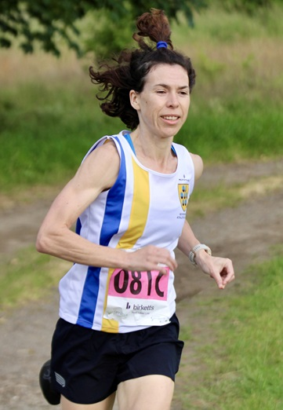

Sevenoaks AC's mixed A-team of Nicolene Hanekom, Ed Saunders and Andrew Hutchinson were second in their category at the Tonbridge AC Summer Relays at Penshurst Place on Wednesday 3rd July, with Nicolene running the fastest leg of the day by a woman.

The SAC women's A-team of Caroline Fenwick, Jo Rodda and Nicola Glover were 5th, the men's A-team of David Ives, Stephen Hough and Paul Fanti were 6th, the men's B-team of Oloff Van Zyl, David Hale and Nick Humphrey-Taylor were15th and the mixed B-team of Lucy Ching, Dan Witt and Dawn Nunes were 21st in their respective categories.
The full results are here.
Thanks to Charlotte Knee Photography (more from the event here) and Mark Hookway (more here) for pictures.